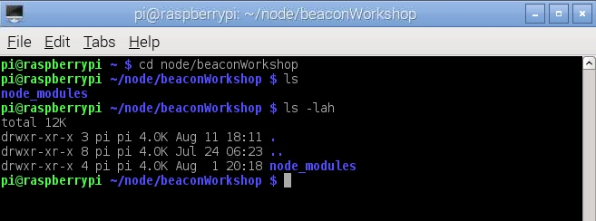

In this workshop you will use the Raspberry Pi (RPi) which will scan for the presence of a type of Bluetooth beacon called a uriBeacon.
This workshop will show you how to:
This workshop uses the JavaScript programming language to do the coding. Javascript is a popular language because of its wide use in web browsers.
To run JavaScript on the command line you need a runtime environment and we will be using Node.js.
There are lots of resources available online where you can find more information on what you have learnt today.
It is expected that you will have some experience of using a Raspberry Pi (or similar) and some experience
of coding.
Not to worry if you don't fit that description as the steps are explained in the workshop and there are people
on hand to help.
We will use some existing software modules along with a little of our own code to end up with a system that will allow us to track the proximity of uriBeacons.
In this workshop you will be working in a Linux Operating system environment. This is an alternative to Microsoft Windows popular with all types of Engineers. Linux commands are indicated by lines starting with; >
> The commands for you to type, or text you will see in
the Linux Terminal, are in this text, and have a >
at the beginning (don't type this)
Logging into the Raspberry Pi:
When the Raspberry Pi starts up you will be prompted to log in. The details are:
> User: pi
> Password: raspberry
Getting a graphical desktop:
Once you have logged in you will need to start the graphical desktop. This can be done by typing;
> startx
Getting a Linux command prompt:
Once the desktop has started click on the icon at the top of the screen to open an "LXTerminal" which is a Linux command prompt window.

Some basic Linux commands:
Change to the directory where we save our work today;
> cd node/beaconWorkshop
This is where we will run our JavaScript program from; more on this in a minute.
To list the contents of the is directory type;
> ls
To be able to see the hidden files and sizes of the files in human readable format, type;
> ls -lah

Starting an editor to enter your program:
On the command line type;
> leafpad tracker.js
Type in the following code into the leafpad editor. When you've finished we will test and debug the code.
When you are ready to run your code;
> sudo node tracker.js "1972" "1966"
Because we need interact with the GPIO pins to control the LED's we will run as superuser which is what the sudo command does.
node is the runtime environment that will run our JavaScript program.
The two numbers in quotes are identifiers of the two beacons we are going to track the proximity of.
When you run this code you will see output on your monitor (from the "console.log" statements in the code).
Debugging your code means to test it and find any errors that prevent it running as you would like it to, or in fact not running at all!
Debugging tips;
?????????????
???????????????
?????????????
????????????
To give the Raspberry Pi the capability to sense Bluetooth beacons we need to add a dongle into the usb port. We also add some LED's as a simple way to show how close the beacons are.
| Pi-Stop Pin Name | Raspberry Pi Pin Name |
|---|---|
| GND | GND |
| Red | 21 |
| Amber | 20 |
| Green | 16 |
| Pi-Stop Pin Name | Raspberry Pi Pin Name |
|---|---|
| GND | GND |
| Red | 7 |
| Amber | 8 |
| Green | 25 |